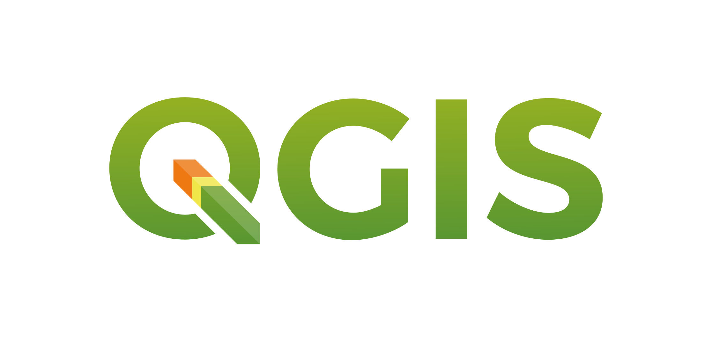
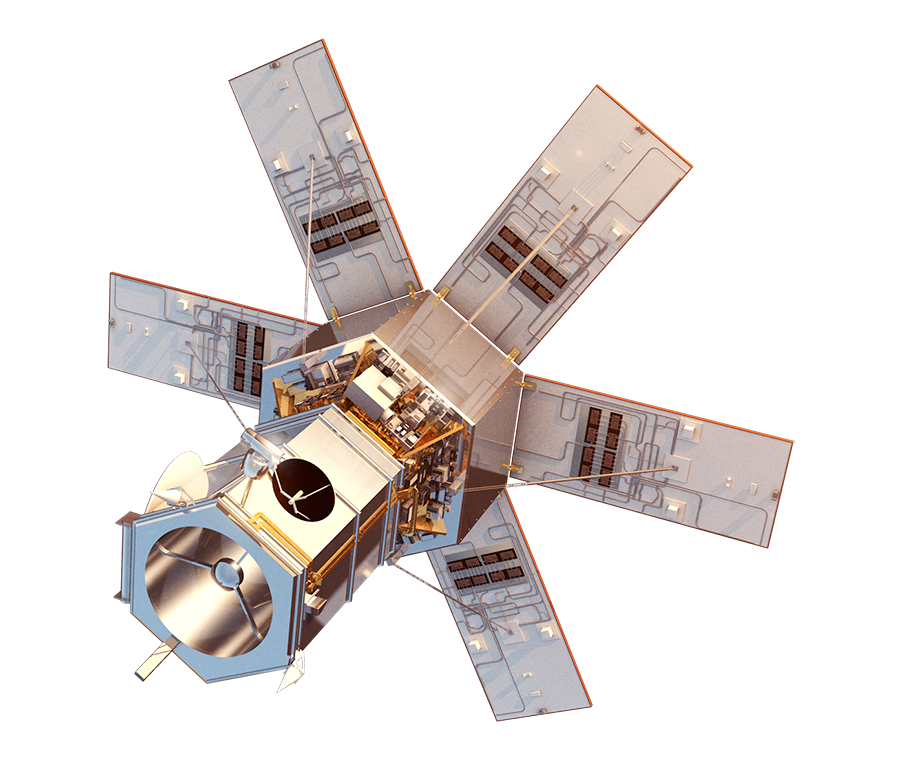
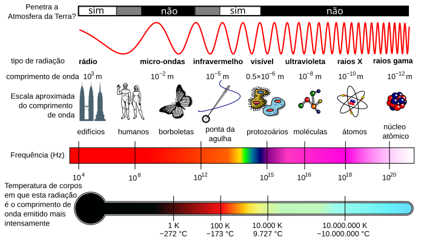
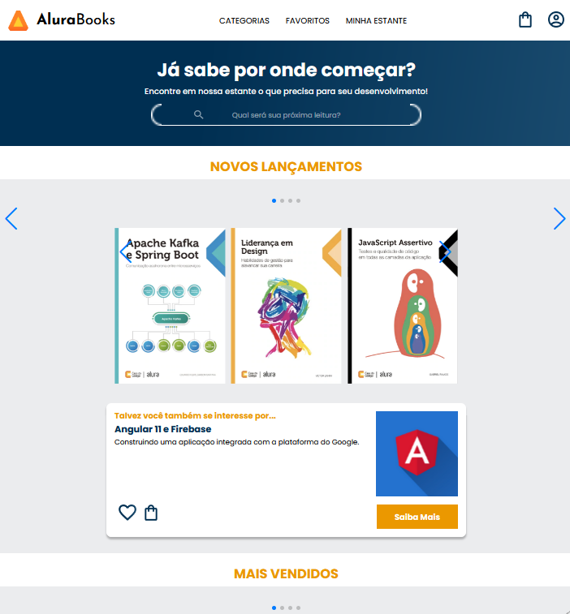
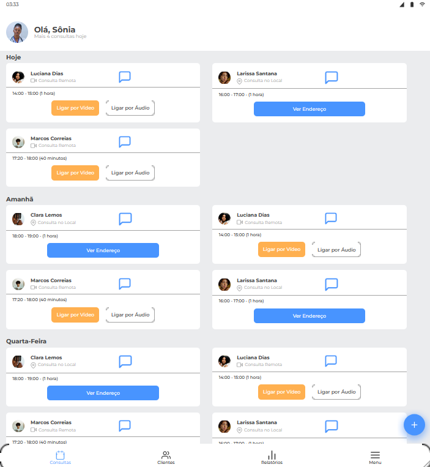
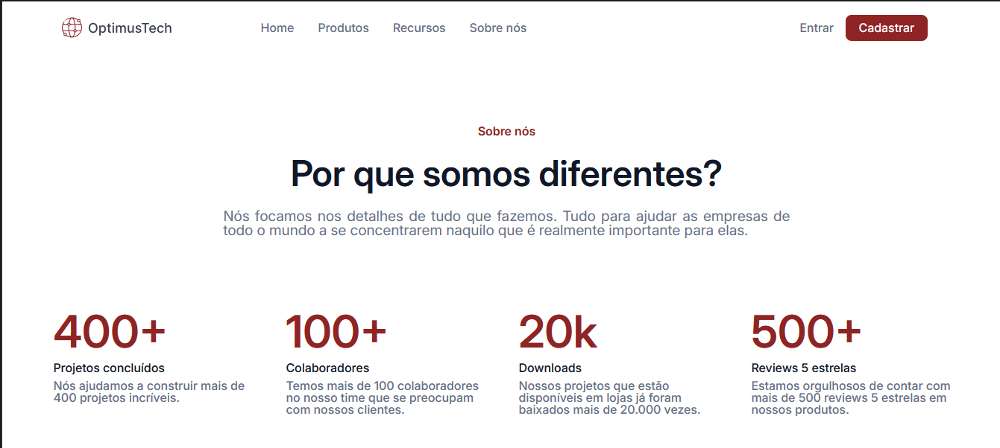

Caminho de Aprendizagem:
Da Análise de Estoques ao Geoprocessamento e Outros
Desafios
Iniciei minha trajetória profissional como menor aprendiz, onde adquiri uma profunda compreensãodo setor de almoxarifado e controle de estoques. Posteriormente, fui contratadocomo assistente de almoxarifado, um papel quedesempenhei com maestria. Motivado pelo meu interesse por tecnologia, decidi me especializar em Ciência da Computação, com ênfase em desenvolvimento de automação.
Após concluir o curso, apliquei meus conhecimentos na área de tecnologia, desempenhando comeficiência e rigor o papel de analista de operações. Atualmente, trabalho no IBGE no setor de geoprocessamento e geoanálise, onde aplico meus conhecimentos em Python e JavaScript para desenvolver e otimizar sistemas de informação geográfica e realizar análises georreferenciadas de dados.
Estou em busca de novas oportunidades que estejam alinhadas com minha formação e experiência, e estou ansioso para contribuir com minha expertise em tecnologia e análise de dados.

Instrutor em Cursos de Geoprocessamento e QGIS do IBGE: Capacitando Servidores Públicos no Amazonas
Tive o privilégio de atuar como um dos instrutores no Curso de Geoprocessamento e QGIS oferecido pela Base Territorial do Amazonas (IBGE). Este curso foi disponibilizado para uma ampla gama de órgãos, empresas e instituições públicas, resultando na formação de aproximadamente 20 turmas, cada uma composta por cerca de 12 participantes.
Durante essas formações, minha função foi ministrar aulas de forma didática e proativa, guiando os participantes através dos fundamentos básicos do geoprocessamento e do uso da ferramenta QGIS. Meu objetivo era assegurar que cada aluno compreendesse claramente as funcionalidades do software e os princípios fundamentais do geoprocessamento, proporcionando um aprendizado passo a passo que facilitasse a aplicação prática dos conhecimentos adquiridos.
Esse trabalho não só permitiu a capacitação de diversos profissionais em uma área crucial, mas também contribuiu para o fortalecimento da base técnica em geoprocessamento no estado do Amazonas e além.
-

- 
- 
- 
Destaques
do
Meu Portfólio
Nesta seção, apresento projetos que refletem meu aprendizado em diversas áreas da programação, tanto no front-end quanto no back-end. No front-end, explorei conceitos como HTML, CSS e JavaScript, criando interfaces interativas e responsivas que melhoram a experiência do usuário.
No back-end, aprendi a trabalhar com linguagens como Python e Node.js, desenvolvendo APIs e gerenciando bancos de dados para garantir que a lógica e os dados funcionem perfeitamente em conjunto.
Cada projeto é uma oportunidade de aplicar esses conhecimentos e entender como as diferentes camadas da tecnologia se interconectam, preparando-me para desafios futuros na área de TI.
-
Aura Books
Site responsivo, onde busca adpatar-se em resoluções de celulares, tabletes e desktop, neste desafio, foi utilizado a tecnica de mobile-firts.
-
Agenda Online de Consultas
Também utilizando Mobile Firts, site que busca simular uma agenda de consultórios médicos, foi utilizado vários estilos em cascata para fazer com que cada estilo fossem desempenhado com maior eficência
-
Page em HTML e CSS
Página Básica envolvendo HTML e CSS para um empresa para recrutar novos colaboradores
Histórico Profissional
-
Menor Aprendiz em Lógistica
Jun 2016 - Nov 2017
(1 Ano, 6 Meses)
Aggreko Energia
-
Assistente Almoxarifado
Jul 2021 - Jun 2022
(1 Ano)
Aggreko Energia
-
Analista de Operações I
Jun 2022 - Mar 2023
(10 Meses)
Aggreko Energia
-
Agente de Pesquisa e Mapeamento
Mai 2023 - Até o momento
(1 Ano, 5 Meses + )
IBGE